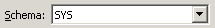
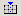
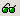
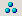
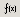
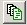

Database Objects List gives a lot of informations about objects contained in database.
In order to find an object, you may choose a schema

then you have to choose the type of object you are
looking for (click on icons to see objects lists) :
- Tables
 Constraints on tables
Constraints on tables Tables' Primary keys
Tables' Primary keys- Tables' Unique keys
 Tables' Foreign keys
Tables' Foreign keys-  Tables'
Indexes
 Sequences
Sequences-  Synonyms
 Grantees
Grantees-  Clusters
 Databases Links
Databases Links Types
Types Types
Bodies
Types
Bodies-  Functions
 Procedures
Procedures Packages Headers
Packages Headers Packages
Bodies
Packages
Bodies Triggers
Triggers- Views
You may choose two differents views, list or details :
It's possible to exclude (in)valide objects :
-  allows to include/exclude valide objects
-
allows to include/exclude invalide objects
Buttons

: click this button to get DDL script of selected object(s)
: click this button to compile selected
object(s). You may compile views, package headers, package bodies...

: drop selected object(s).

: refresh objects list (usefull if objects have been dropped outer SQLTools).

: Shows other actions allowed.
|
|
- Load all DDL scripts in one document only
- Enable selected object(s)
- Disable selected object(s)
- Select all objects
|
: Shows next options
: close Database Objects List window


 List :
List :